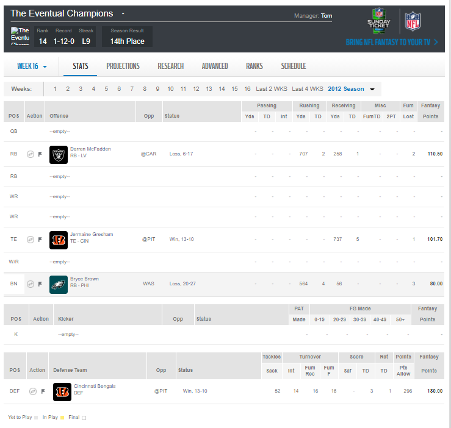

The year was 2012. It was a simpler time. It was our first season of Fantasy Football and, with an elite corps of Quarterbacks taken in the first round, this rag-tag bunch of high school friends was ready to embark on a Fantasy Football journey that would last for decades. Little did they know, this season would become shrouded in a cloud of controversy as two players gave in to the dark side and chose a path of evil. These are the FACTS of that event.
The trade deadline of November 23rd, 2012 was fast approaching during Week 12 of the NFL season. It was the perfect time to hatch a plan. To set the stage, Tom's team The Eventual Champions was 1-10 through 11 weeks and was comfortably in 14th place. In constrast (somewhat), Dobes' team Chicago's Polish Mob was 5-6 and needed a well-timed push to make the playoffs. Conveniently for Dobes, he had a close friend in the league. His friend for years, Tom and his abysmal team were ready and willing to help Dobes make his playoff push. While Tom's team was bad, he had a top 10 wide receiver in Roddy White on his squad. A plot develops. If Tom can get Roddy White on Dobes's team, then Dobes will have a chance at the Playoffs. But how could they do that? The league wouldn't let that happen surely.. And how did they do it? Through sheer force. By hammering 3 trades out in a single week, they were able to sneak the last trade through after the first two got vetoed. The final trade was accepted at 1:08 AM on November 23rd. That's right. The day of the trade deadline. (The trade was processed 24 hours later on November 24th, pictured below)
| Tom Gives | Position Rank | Dobes Gives | Position Rank |
|---|---|---|---|
| Roddy White | WR 10 | Dwayne Bowe | WR 47 |
| Philip Rivers | QB 21 | Christian Ponder | QB 22 |
| Shonn Green | RB 15 | Willis McGahee | RB 26 |
| Tom Gives | Position Rank | Dobes Gives | Position Rank |
|---|---|---|---|
| Roddy White | WR 10 | Dwayne Bowe | WR 47 |
| Kenny Britt | WR 59 | Christian Ponder | QB 22 |
| Shonn Green | RB 15 | Willis McGahee | RB 26 |
| Tom Gives | Position Rank | Dobes Gives | Position Rank |
|---|---|---|---|
| Roddy White | WR 10 | Dwayne Bowe | WR 47 |
| Kenny Britt | WR 59 | Christian Ponder | QB 22 |
| Donnie Avery | WR 46 |
Somewhat. Dobes immediately lost to Matthew in Week 12 but grabbed a win against Dane in Week 13. He ended the season at 6-7, which was enough to sneak into the playoffs with a 6th place finish. In the playoffs, he promptly was put in his place by Adam "Ape Arms" Eibel, who beat him 131.76 to 75.84. Adam was the highest scorer of the week, but Dobes would have lost if he played anyone in the playoffs. I guess the Fantasy gods wanted him to hurt for his dishonest behavior.
In the worst finish in DK Fantasy Football history, the Eventual Champions ended the regular season 1-12. By the time the playoffs had ended, Tom had dropped most of his players. He scored 75.20 in Week 14, 42.20 in Week 15, and 29.60 in Week 16. A finish so poor, we named the league after his team.
